pacman::p_load(sf, tidyverse, lubridate, spatstat, raster, tmap, sparr)Take-home Exercise 1: Geospatial Analytics for Social Good: Application of Spatial and Spatio-temporal Point Patterns Analysis to discover the geographical distribution of Armed Conflict in Myanmar
Setting the Scene
Millions of people have their lives shattered by armed conflict – wars – every year.
Armed conflict has been on the rise since about 2012, after a decline in the 1990s and early 2000s. First came conflicts in Libya, Syria and Yemen, triggered by the 2011 Arab uprisings. Libya’s instability spilled south, helping set off a protracted crisis in the Sahel region. A fresh wave of major combat followed: the 2020 Azerbaijani-Armenian war over the Nagorno-Karabakh enclave, horrific fighting in Ethiopia’s northern Tigray region that began weeks later, the conflict prompted by the Myanmar army’s 2021 power grab and Russia’s 2022 assault on Ukraine. Add to those 2023’s devastation in Sudan and Gaza. Around the globe, more people are dying in fighting, being forced from their homes or in need of life-saving aid than in decades.
Source: 10 Conflicts to Watch in 2024
Objectives
Geospatial analytics hold tremendous potential to address complex problems facing society. In this study, you are tasked to apply spatial point patterns analysis methods to discover the spatial and spatio-temporal distribution of armed conflict in Myanmar.
The Data
Armed conflict data
For the purpose of this assignment, armed conflict data of Myanmar between 2021-2024 from Armed Conflict Location & Event Data (ACLED), an independent, impartial, international non-profit organization collecting data on violent conflict and protest in all countries and territories in the world, should be used.
In terms of event types, students should focus on at least four main event types, namely: Battles, Explosion/Remote violence, Strategic developments, and Violence against civilians.
In terms of study period, students should focus on quarterly armed conflict events from January 2021 until June 2024.
GIS Data
The Task
The specific tasks of this take-home exercise are as follows:
Using appropriate function of sf and tidyverse packages, import and transform the downloaded armed conflict data and administrative boundary data into sf tibble data.frames.
Using the geospatial data sets prepared, derive quarterly KDE layers.
Using the geospatial data sets prepared, perform 2nd-Order Spatial Point Patterns Analysis.
Using the geospatial data sets prepared, derive quarterly spatio-temporal KDE layers.
Using the geospatial data sets prepared, perform 2nd-Order Spatio-temporal Point Patterns Analysis.
Using appropriate tmap functions, display the KDE and Spatio-temporal KDE layers on openstreetmap of Myanmar.
Describe the spatial patterns revealed by the KDE and Spatio-temporal KDE maps.
Grading Criteria
This exercise will be graded by using the following criteria:
- Geospatial Data Wrangling (20 marks): This is an important aspect of geospatial analytics. You will be assessed on your ability to employ appropriate R functions from various R packages specifically designed for modern data science such as readxl, tidyverse (tidyr, dplyr, ggplot2), sf just to mention a few of them, to perform the entire geospatial data wrangling processes, including. This is not limited to data import, data extraction, data cleaning and data transformation. Besides assessing your ability to use the R functions, this criterion also includes your ability to clean and derive appropriate variables to meet the analysis need.
Warning
All data are like vast grassland full of land mines. Your job is to clear those mines and not to step on them).
Geospatial Analysis (30 marks): In this exercise, you are expected to use the appropriate spatial point patterns analysis methods and R packages introduced in class to analysis the geospatial data prepared. You will be assessed on your ability to derive analytical products by using appropriate kernel estimation techniques.
Geovisualisation and geocommunication (20 marks): In this section, you will be assessed on your ability to communicate Exploratory Spatial Data Analysis and Confirmatory Spatial Data Analysis results in layman friendly visual representations. This course is geospatial centric, hence, it is important for you to demonstrate your competency in using appropriate geovisualisation techniques to reveal and communicate the findings of your analysis.
Reproducibility (15 marks): This is an important learning outcome of this exercise. You will be assessed on your ability to provide a comprehensive documentation of the analysis procedures in the form of code chunks of Quarto. It is important to note that it is not enough by merely providing the code chunk without any explanation on the purpose and R function(s) used.
Bonus (15 marks): Demonstrate your ability to employ methods beyond what you had learned in class to gain insights from the data.
Submission Instructions
The write-up of the take-home exercise must be in Quarto html document format. You are required to publish the write-up on Netlify.
Zip the take-home exercise folder and upload it onto eLearn. If the size of the zip file is beyond the capacity of eLearn, you can upload it on SMU OneDrive and provide the download link on eLearn..
Due Date
22nd September 2024 (Sunday, mid-night 11:59pm).
Reference
My Task
Using appropriate function of sf and tidyverse packages, import and transform the downloaded armed conflict data and administrative boundary data into sf tibble data.frames.
Import kitchen sink packages. here are some small descriptions of them:
sf: used for geospatial data
spatstat: point pattern analysis
tidyverse: modular packages installations, lots of different utility in here
tmap: interactive visualisations
raster: density calculation
Data Importing
Read in the csv data file from the ACLED website that contains Armed Conflict data of Myanmar between 2021-2024. Also read in the Myanmar ESRI file. Both need to be transformed to match.
data <- read.csv("data/1data/2021-01-01-2024-06-30-Myanmar.csv")
data_sf <- st_as_sf(data, coords = c("longitude", "latitude"), crs = 4326)
data_sf <- st_transform(data_sf, crs = 32648)
mmr <- st_read(dsn="data/1data/geospatial/mmr", layer = "mmr_polbnda_adm1_250k_mimu_1")Reading layer `mmr_polbnda_adm1_250k_mimu_1' from data source
`C:\Users\thevi\OneDrive\Desktop\IS415\IS415\take-home\data\1data\geospatial\mmr'
using driver `ESRI Shapefile'
Simple feature collection with 15 features and 6 fields
Geometry type: MULTIPOLYGON
Dimension: XY
Bounding box: xmin: 92.1721 ymin: 9.696844 xmax: 101.17 ymax: 28.54554
Geodetic CRS: WGS 84mmr <- st_transform(mmr, crs = 32648)Using the geospatial data sets prepared, derive quarterly KDE layers.
Data Wrangling for Quarters
Changed the event_date to a standardized format, added year/quarter column and quarter (1-14) column.
data_sf$event_date <- as.Date(data_sf$event_date, format = "%d %b %Y")
data_sf <- data_sf %>%
mutate(quarter_num = case_when(
year == 2021 & event_date < as.Date("2021-04-01") ~ 1,
year == 2021 & event_date < as.Date("2021-07-01") ~ 2,
year == 2021 & event_date < as.Date("2021-10-01") ~ 3,
year == 2021 ~ 4,
year == 2022 & event_date < as.Date("2022-04-01") ~ 5,
year == 2022 & event_date < as.Date("2022-07-01") ~ 6,
year == 2022 & event_date < as.Date("2022-10-01") ~ 7,
year == 2022 ~ 8,
year == 2023 & event_date < as.Date("2023-04-01") ~ 9,
year == 2023 & event_date < as.Date("2023-07-01") ~ 10,
year == 2023 & event_date < as.Date("2023-10-01") ~ 11,
year == 2023 ~ 12,
year == 2024 & event_date < as.Date("2024-04-01") ~ 13,
year == 2024 ~ 14
))Data Wrangling - cont.
Make a ppp and sp for the data frames for future use.
data_ <- as_Spatial(data_sf)
data_sp <- as(data_, "SpatialPoints")
data_ppp <- as.ppp(data_sf)Check if any data_ppp points are duplicated - if they are this could lead to data validation problems.
any(duplicated(data_ppp))[1] FALSEmmr_owin <- as.owin(mmr)KDE Layers
For each quarterly layer, we must create a spot for it to be stored in.
data_list <- lapply(1:14, function(q) {
filter(data_sf, quarter_num == q)
})
names(data_list) <- paste0("data", 1:14)Go through all of the quarters and create them all an Owin file.
ppp_list <- lapply(1:14, function(q) {
quarter_data <- filter(data_sf, quarter_num == q)
quarter_ppp <- as.ppp(quarter_data)
mmr_ppp_quarter <- quarter_ppp[mmr_owin]
return(mmr_ppp_quarter)
})
names(ppp_list) <- paste0("mmr_ppp_quarter_", 1:14)Calculate a KDE for all quarters, plot them and save them to raster files.
for (i in 1:14) {
mmr_ppp_quarter <- ppp_list[[paste0("mmr_ppp_quarter_", i)]]
# Compute density
density_ppp <- density(mmr_ppp_quarter)
density_raster <- raster(density_ppp)
# Save the raster to a file
writeRaster(density_raster, filename = paste0("data/1data/raster/KDE/density_quarter_", i, ".tif"), format = "GTiff", overwrite = TRUE)
plot(density_raster, main = paste("Density for Quarter", i))
}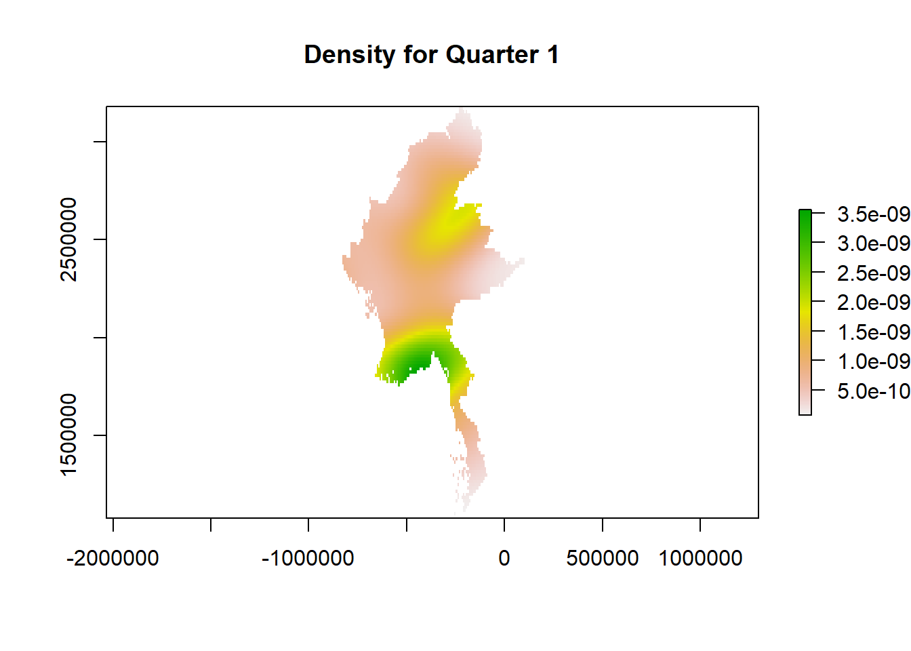
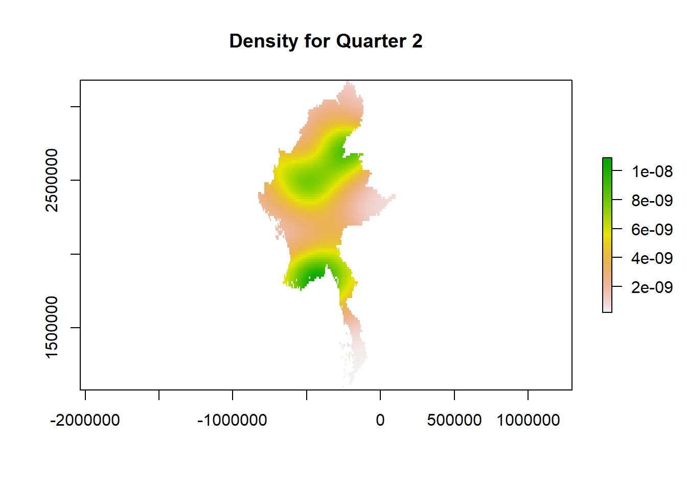
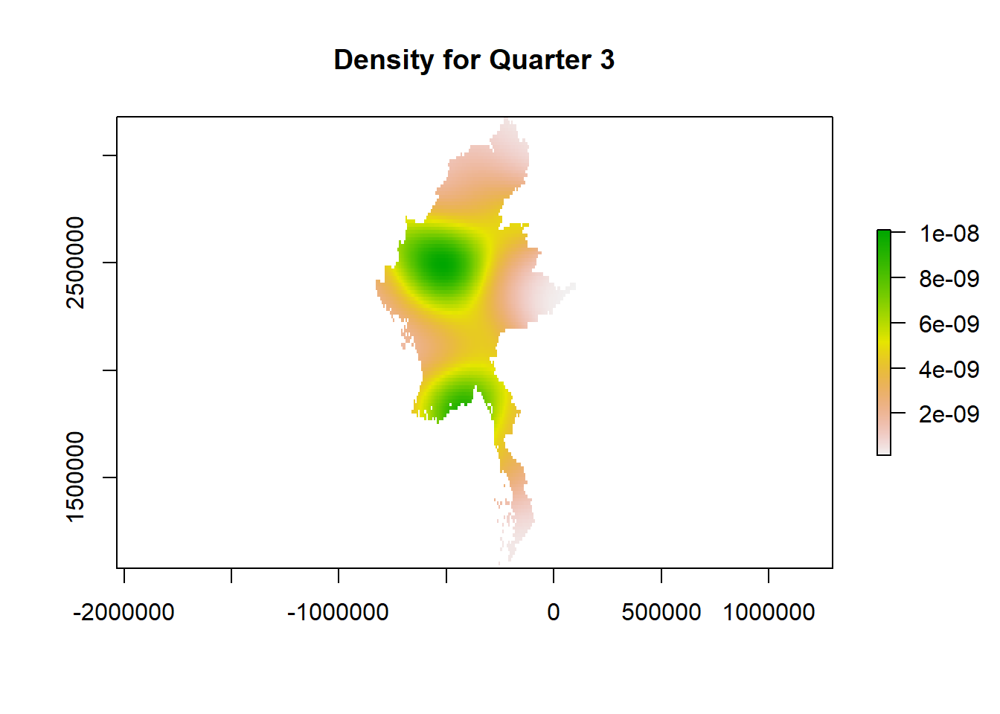
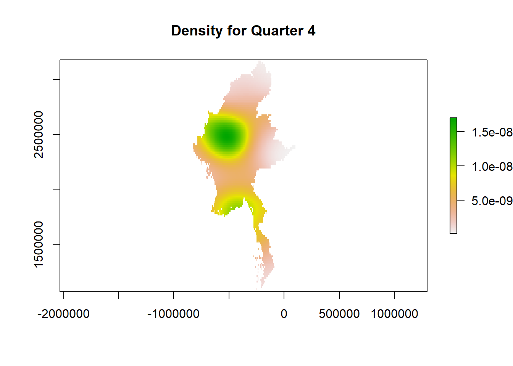
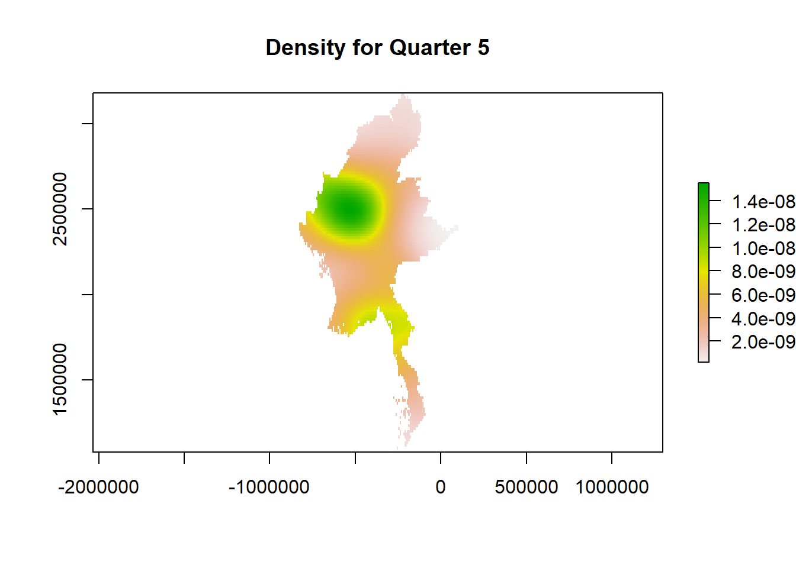
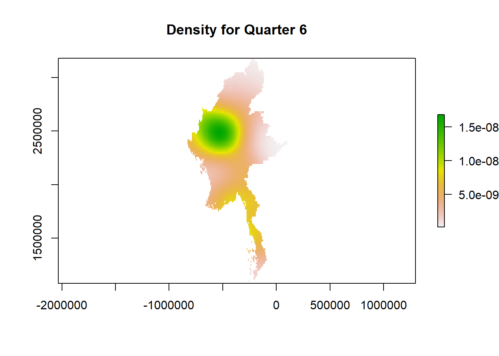
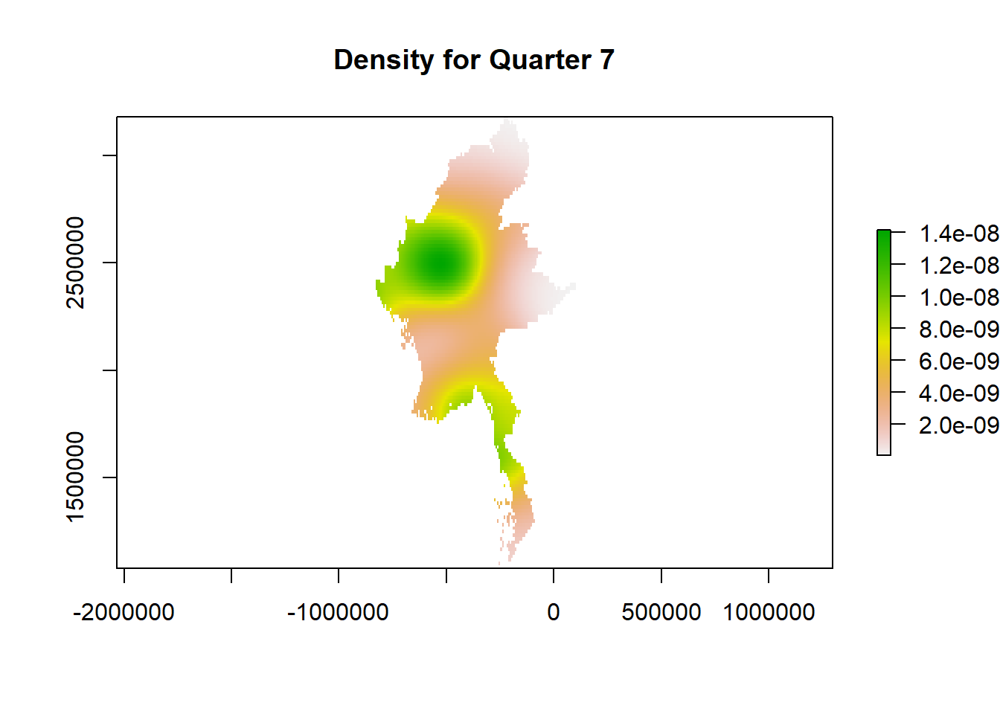
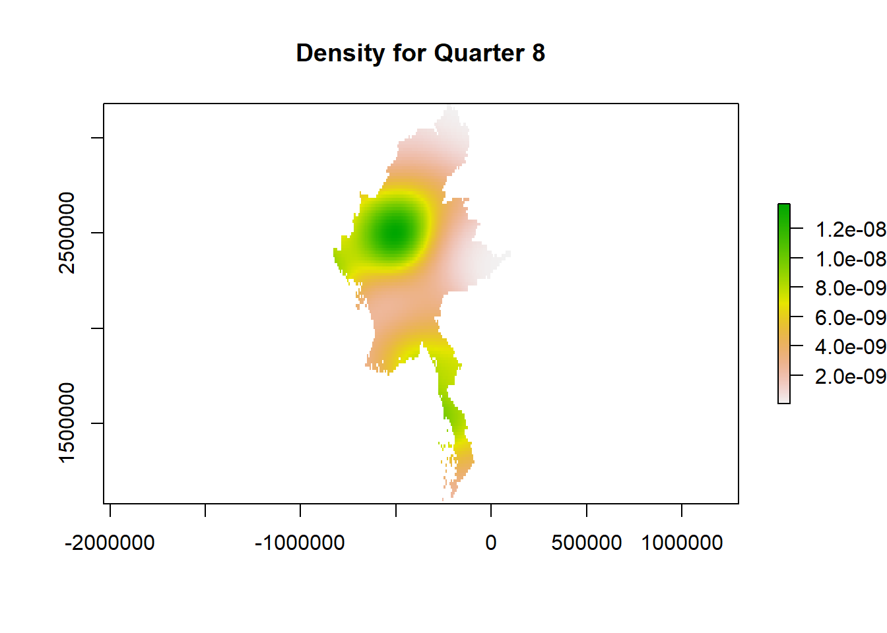

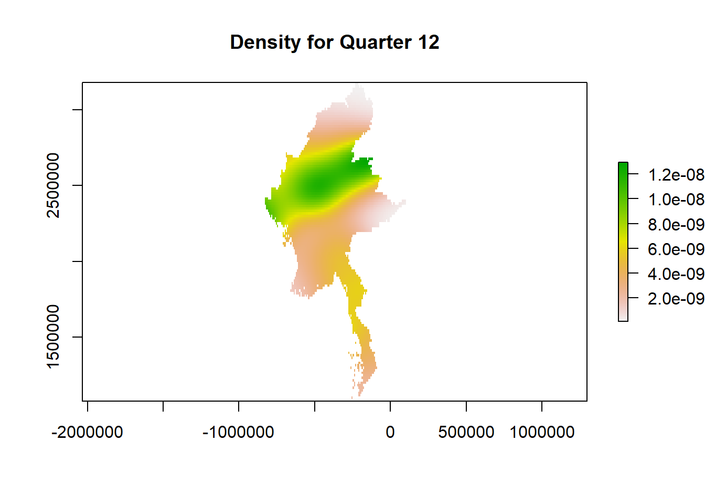
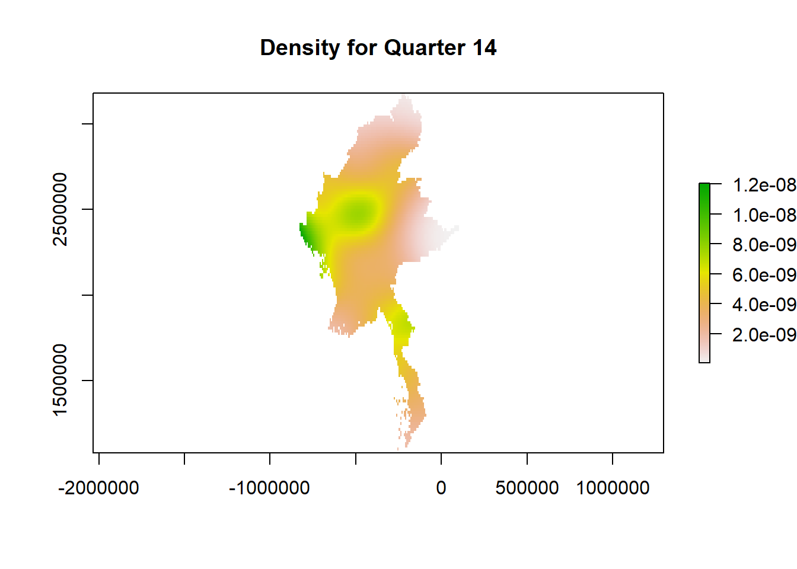
Using the geospatial data sets prepared, perform 2nd-Order Spatial Point Patterns Analysis.
Some data wrangling
data_ppp <- as.ppp(data_sf)
mmr_ppp <- data_ppp[mmr_owin]Using F-Function, create a F-curve
F_MMR = Fest(mmr_ppp)
plot(F_MMR)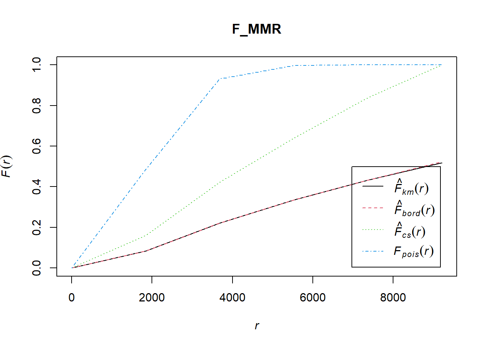
Using a Monte Carlo Simulation, Discover the feasibility of the Second-Order KDE
F_MMR.csr <- envelope(mmr_ppp, Fest, nsim = 3)Generating 3 simulations of CSR ...
1, 2, [57 sec remaining]
3.
Done.plot(F_MMR.csr)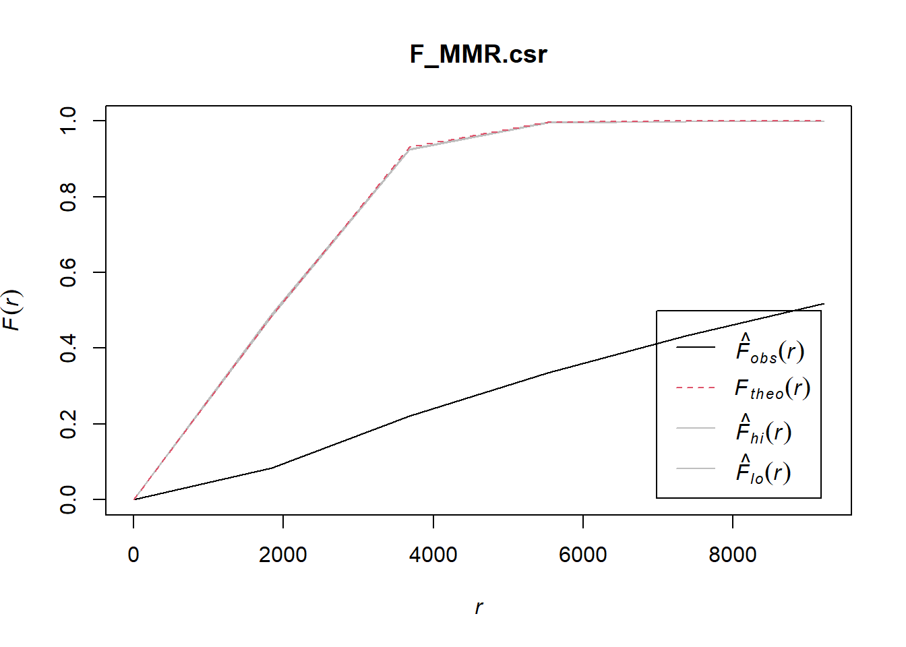
Using appropriate tmap functions, display the KDE on openstreetmap of Myanmar.
tmap_mode("view")
kde_map <- tm_shape(density_raster) +
tm_raster(title = "KDE", palette = "viridis") +
tm_basemap(server = "oms")
kde_mapSorry for low-quality submission - found the work/requirements very confusing